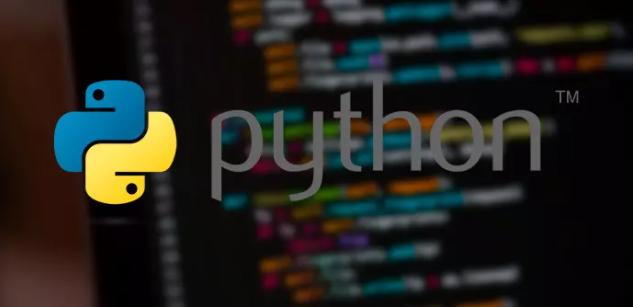
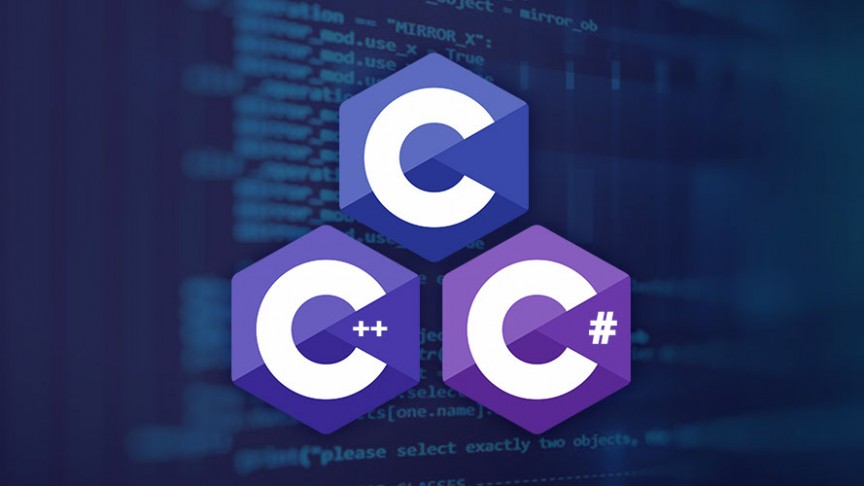

Java es un lenguaje de programación y una plataforma informática comercializada por primera vez en 1995 por Sun Microsystems. ... Java es rápido, seguro y fiable. Desde portátiles hasta centros de datos, desde consolas para juegos hasta súper computadoras, desde teléfonos móviles hasta Internet, Java está en todas partes

Python
Python es un lenguaje de programación de alto nivel que se utiliza para desarrollar aplicaciones de todo tipo. A diferencia de otros lenguajes como Java o . ... Además, se trata de un lenguaje multiplataforma de código abierto y, por lo tanto, gratuito, lo que permite desarrollar software sin límites

C/C++/C#
C# nace hacia el año 2000, de la mano de Microsoft con el objetivo de mejorar C++. C# es un lenguaje de programación orientado a objetos y forma parte de la plataforma . NET. Su sintaxis proviene de C y C++ y usa el modelo de objetos de la plataforma
El lenguaje C, está orientado a la programación estructurada. ¿En qué consiste la programación estructurada?. Pues, básicamente, en trabajar con código secuencial, con un conjunto de sentencias o instrucciones que se ejecutan una por una.
Las podemos clasificar en:
Instrucciones condicionales.
Instrucciones de iteración (bucle de instrucciones).
El concepto de estructurada viene de trabajar con funciones.
En cambio C++ también está orientado a la Programación POO (Programación orientada a Objetos). Esta es la diferencia más grande entre los dos idiomas.
A continuación, muestro un gráfico con este concepto diferencial entre ambos lenguajes.
Hemos visto las diferencias, pero también hay similitudes importantes. Por ejemplo, ambos lenguajes trabajan con funciones.
Visita nuestro Curso de Programación en C++
¿Qué son las funciones en C ?
Las funciones son un conjunto de sentencias, que forman un bloque, y que realizan una tarea bien definida.
Una muestra de que la filosofía de C se basa en el empleo de funciones, es que un programa en C contiene al menos una función, la función main(), la función principal, punto de entrada del programa.
Podemos clasificar las funciones de C en dos grupos:
Las definidas por el estándar ANSI C (funciones de biblioteca) y que pueden ser utilizadas por el programador
Las definidas por cada programador, de acuerdo con las necesidades para diseñar sus programas.
Un ejemplo de función de C, puede ser printf() que imprime por la salida estándar los argumentos que le pasamos:
printf(“El cubo del número %d es %d\n”, numero, cubo(numero));
En este ejemplo, fijaros que combinamos una función de la librería estándar y una función creada por nosotros: Cubo(numero).
La utilización de funciones nos permite dividir un programa extenso en pequeños segmentos que realizan tareas concretas. De esta manera, para las tareas que se realizan repetidamente en un programa, utilizaremos funciones, permitiéndonos reutilizarlas. También nos ayudarán a mejorar la legibilidad de nuestro código y a debugarlo, para ver los errores de lógica.
Funciones en objetos (C++)
Vamos a avanzar un pasito y aplicaremos lo visto anteriormente a la filosofía de objetos.
A modo de una primera aproximación, en la vida real, todo lo que nos envuelve son objetos: un ordenador, una botella de agua, una persona….
Cada uno tiene sus propiedades, unos se mueven (una persona), otros actúan de contenedores (la botella de agua), otros actúan para mostrarnos información (ordenadores, televisores)…
Propiedades (atributos) y métodos (funciones) en POO
Cada objeto tiene sus propiedades, la persona tiene un nombre, un color de piel, un color de ojos, una raza, y así una lista interminable de características (Propiedades). Y tiene una serie de acciones: camina, corre, duerme…(Métodos)
Lo mismo podríamos decir del ordenador, tiene un tamaño de pantalla y podemos realizar una serie de acciones sobre él: encenderlo, apagarlo…
Siguiendo con la terminología de la programación estructurada, las propiedades o atributos del objeto serían las variables, y los métodos serían las funciones.
La diferencia esencial de aplicarlas a la programación orientada a objetos es que asociamos el método al objeto. Es muy importante este punto y es en donde radica toda su potencia.
Ejemplo
miPersona.Corre()
miOrdenador.Apaga()